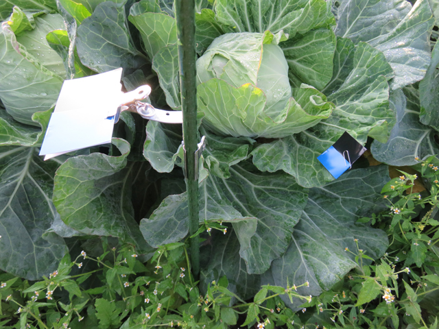
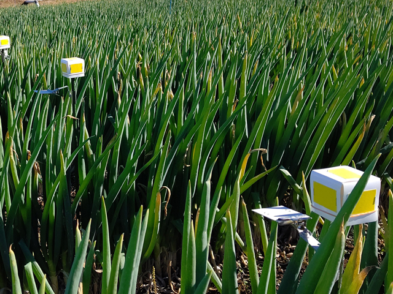
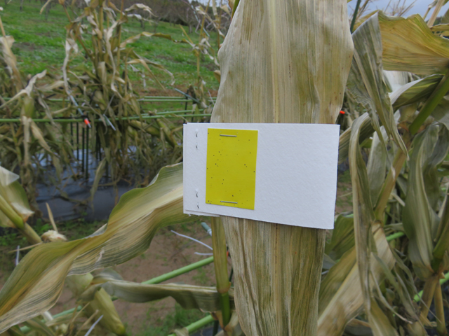
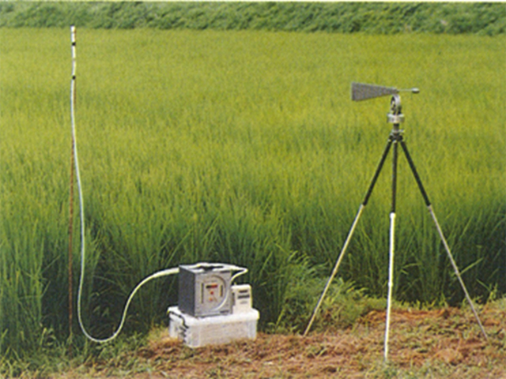
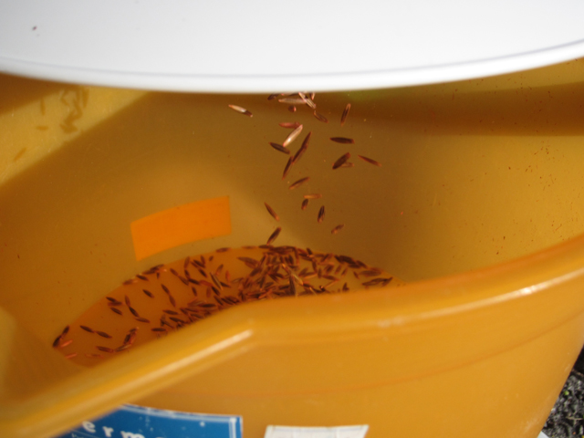

現地試験
現地圃場において、基礎試験で適当と認められた農薬、またはこれに相当する客観的な裏付けを有する農薬の使用方法、防除効果、作物残留、環境への影響などの実用性を明らかにする試験です。
（１）作物残留試験
無人航空機による農薬散布の特徴である高濃度少量散布における農作物への農薬の残留性について調査をします。また、当協会はＧＬＰ基準適合施設の確認を受けております。
（※圃場試験は各地の公的試験機関、植物防疫協会や民間の調査機関、分析試験は民間の分析機関と連携して実施します。）
- 目的例
-
- 高濃度少量散布の作物残留性のデータ収集
- 調査内容
-
- ＧＬＰ作物残留試験、非ＧＬＰ作物残留試験
- 実績
-
- ＧＬＰ試験（平成２２年度から令和４年度まで４７試験）
これまでに試験対象とした作物 水稲、大麦、小麦、だいず、とうもろこし、ばれいしょ、きゃべつ、はくさい、さとうきび - 非ＧＬＰ試験（平成元年から令和３年度まで２３３試験）
これまでに試験対象とした作物 水稲、大麦、小麦、だいず、とうもろこし、かんしょ、ばれいしょ、やまのいも、かぼちゃ、きゃべつ、だいこん、たまねぎ、アスパラガス、にんじん、かんきつ、てんさい
- ＧＬＰ試験（平成２２年度から令和４年度まで４７試験）
（２）薬効試験・薬害試験
地上散布では登録を有する農薬であっても無人航空機による散布に適するように高濃度・少量に調製したときに効果や薬害が異なる可能性があることから、実圃場(大規模実証試験を含む)において薬効・薬害の確認をして、農薬の適用拡大や普及のための試験成績を作成します。
薬害試験をポットで行う場合、走行式散布装置を用いた試験も可能
（※圃場試験は各地の公的試験機関、植物防疫協会や民間の調査機関、分析試験は民間の分析機関と連携して実施します。）
- 目的例
-
- 適用拡大登録申請のためのデータ収集
- 高濃度少量撒布の実用化・実証のデータ収集
- 調査内容
-
- 薬効薬害試験（公開・非公開については相談に応じます。）
- 実績
-
- 平成元年から令和５年度まで１２９５試験
これまでに試験対象とした作物 水稲、小麦、大麦、はとむぎ、だいず、あずき、そば、とうもろこし、かんしょ、ばれいしょ、やまのいも、きゃべつ、だいこん、はくさい、ブロッコリー、かぼちゃ、アスパラガス、しょうが、たまねぎ、にんじん、らっきょう、ねぎ、レタス、かんきつ、かき、なし、りんご、くり、さとうきび、てんさい、芝、牧草、スギ
- 平成元年から令和５年度まで１２９５試験
（３）効果的な散布技術の確認試験
防除対象の作物ごとの多様な栽培形態、草丈、草型など対応した効果的な散布方法(飛行方法)を薬効及び付着の面から調査し、最適な飛行諸元と農薬の散布水量を定めるための試験を行います。
- 目的例
-
- 試験農薬の高濃度少量散布に適した水量についてデータ収集
- 各機種の特徴に応じた対象作物における飛行方法についてのデータ収集
- 調査内容
-
- 散布液付着試験 作物の形態にあわせた位置に設置した感水紙等調査資材により付着を調査する。
- 薬効試験
- 実績
-
- 令和３年度から５年度 ネギ、とうもろこし、キャベツ、みかん

キャベツ付着調査 
ねぎ付着調査 
とうもろこし付着調査
（４）無人航空機による農薬散布における環境調査
無人航空機における農薬散布による河川水、飛散農薬、気中濃度などへ環境影響調査を行います。
- 目的例
-
- 農薬再評価等のためのデータ収集
- 調査内容
-
- 河川水質、水中農薬、生態調査 河川水中濃度や河川底質濃度の経時変化を調査
- ドリフト調査 散布資材の圃場外飛散を調査
- 気中濃度調査 現地圃場で大気中農薬のモニタリングを行う。農薬の物理化学性、気象条件、経過時間による気中濃度の変化を調査する。
- 実績
-
- 無人ヘリコプターによる散布農薬の河川等における消長調査（平成8、9、11年）
- 無人ヘリコプター散布後の農薬の気中濃度調査（平成13年）
- 周辺水域（河川等）における農薬の生態影響調査(3)(平成14年)
- 航空防除及び無人ヘリコプター防除実施周辺河川への消長調査（平成14年）
- 周辺水域（河川等）における農薬の影響調査（平成15年）
- 無人ヘリコプターによる水稲作除草剤のドリフト調査 等

（５）総合的病害虫・雑草管理(IPM)における無人航空機の活用
農林水産省の「みどりの食料システム戦略」に沿った化学農薬の節減、農業生産の持続性の確保に寄与するため、総合的病害虫・雑草管理(ＩＰＭ)に資する無人航空機の活用について、地域に合った技術体系の実証調査を行います。
- 目的例
-
- 病害虫・雑草の防除に資する天敵温存植物、対抗植物、緑肥植物等の播種、生物農薬等の散布技術の実証試験
- 調査内容
-
- 空中散布機材、農薬、種苗の調達
- 予備試験の実施 吐出量調査、散布幅の調査他
- 経営・技術評価にかかる専門家の紹介等
- 実績
-
- 令和３年度 ヘアリーベッチ、アウェナ ストリゴザ(エンバク)、ペルシアンクローバー種子散布予備試験
